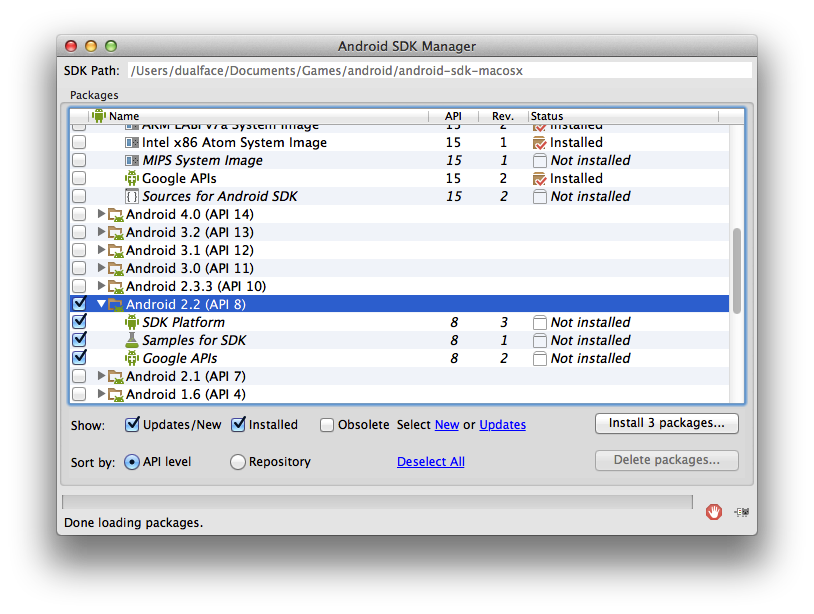

如果不需要 Android，那么可以跳过 2/6 两个步骤。
配置编译环境的基本步骤：
从 https://developer.apple.com/xcode/index.php 下载最新稳定版 Xcode，并进行安装。
Xcode 安装完成后，打开“偏好设置”对话框，安装 ** Command Line Tools **.
最终的目录结构:
<PATH_TO>/android/android-ndk-r?
<PATH_TO>/android/android-sdk-macosx
<PATH_TO>/android/eclipse运行 android/android-sdk-macosx/tools/android, 选中 Android SDK 2.2（如果看不到 Android SDK 2.2，请设置代理）, 并完成安装。 
方法 1: 最快速获得源代码的途径是通过 quick-cocos2d-x 官方网站上的下载页面。这里列出了所有的稳定版本及其下载链接。
注意，解压缩的源代码不能放在有空格和汉字的路径中。
方法 2: 使用 git 工具克隆 quick-cocos2d-x 仓库。启动 终端 应用程序, 运行命令:
$ git clone git@github.com:chukong/quick-cocos2d-x.git
Cloning into 'quick-cocos2d-x'...如果访问 github.com 速度太慢，可以使用国内镜像仓库，网页：https://code.csdn.net/liaoyulei01/quick-cocos2d-x
保持 git 仓库处于最新状态
运行命令:
$ cd quick-cocos2d-x
$ git pull
启动 终端 应用程序, 运行命令:
$ touch ~/.bash_profile
$ open ~/.bash_profile -a TextEdit
添加下列代码:
export ANDROID_NDK_ROOT=<PATH_TO>/android/android-ndk-r8e
export ANDROID_SDK_ROOT=<PATH_TO>/android/android-sdk-macosx
export QUICK_COCOS2DX_ROOT=<PATH_TO>/quick-cocos2d-x
export COCOS2DX_ROOT=${QUICK_COCOS2DX_ROOT}/lib/cocos2d-x
export ANDROID_HOME=${ANDROID_SDK_ROOT}
启动 Xcode，在“偏好设置”中添加 Source Trees:
启动 Xcode, 打开项目 <PATH_TO>/quick-cocos2d-x/player/proj.mac/quick-x-player.xcodeproj.
编译运行。
启动 终端 应用程序, 改变当前目录为
$ cd quick-cocos2d-x/sample/luajavabridge/proj.android
$ ./build_native.sh
如果一切顺利，将看到:
SharedLibrary : libgame.so
Install : libgame.so => libs/armeabi/libgame.so
启动
1.选择菜单 File -> Import, 再选择 Android -> Existing Android Code Into Workspace :
2.点击 Browse 按钮, 选择
3.点击 Finish.
4.重复上述步骤，导入 luajavabridge/proj.android:
5.在 Package Explorer 中选中 LuajavaBridge，点击右键选择菜单 Properties:
6.如果 ** Library ** 列表里 ** libcocos2dx ** 已经存在，就先删除。点击 ** Add ** 按钮, 选中 ** libcocos2dx **.
7.完成。
Android 官方文档：http://developer.android.com/tools/device.html
在 Eclipse 里选择菜单 Window -> Show View -> Other…, 再选择 Android -> Devices.
如果设备设置完成，那么在 Devices 标签页中就可以看到你的设备:
在项目 LuajavaBridge 上点击鼠标右键, 选择菜单 Debug As -> Android Application. 如果一切正常，等一会儿就可以在设备上看到运行画面了：
截止2014.5.28, NDK 已更新到 android-ndk-r9d,请用新的NDK版本